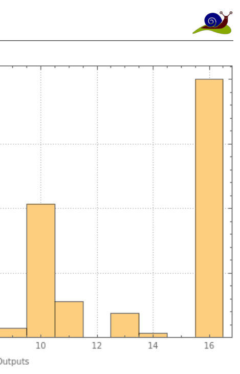
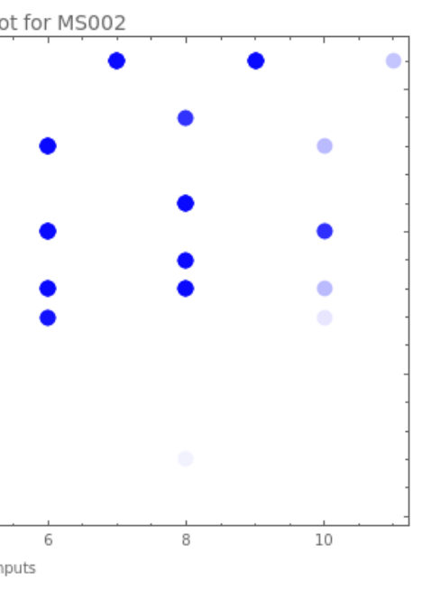
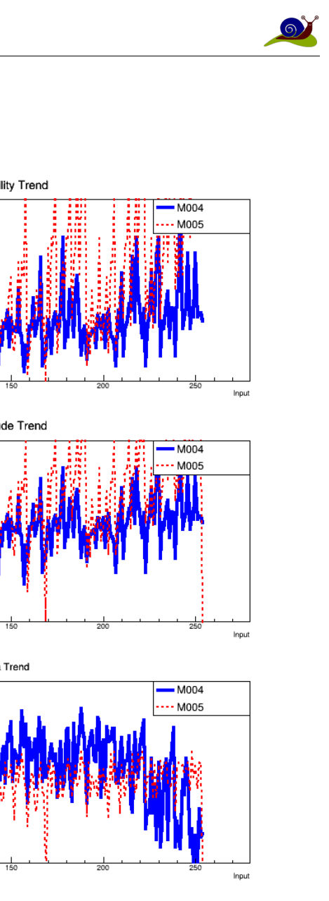
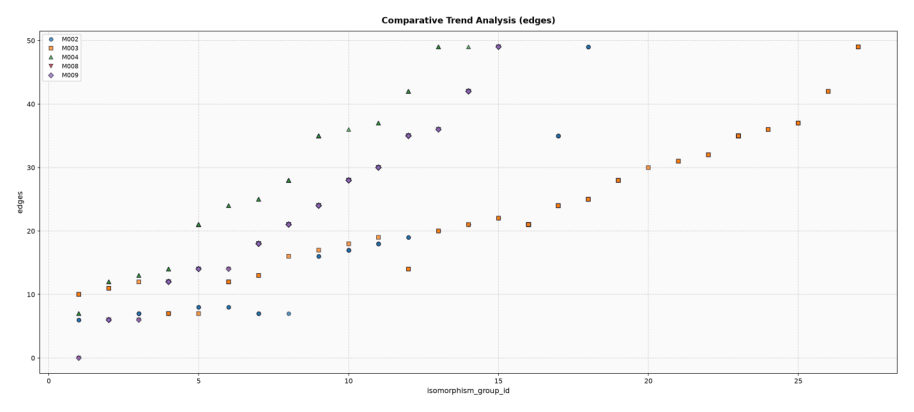

Authors: Pablo Rodriguez-Grasa, Sofiene Jerbi, Mikel Sanz, Ryan Sweke
Type: theory · Category: quantum information and computing · PDF: https://arxiv.org/pdf/2609.16266v1
Analysis basis: full PDF text, analyzed in chunks
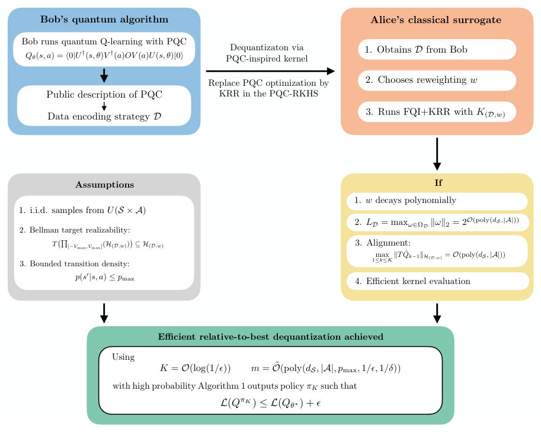
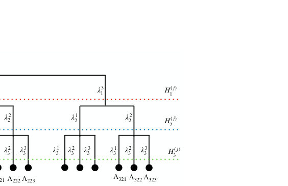
Summary. This paper tackles the theoretical question of whether Quantum Q-learning offers a true quantum advantage by developing a surrogate-based dequantization program. By restricting the problem to a simplified sampling regime, the authors prove that classical kernel methods can effectively mimic the quantum performance under specific structural conditions. This work provides rigorous theoretical bounds on the potential quantum advantage in reinforcement learning.
Why it may be interesting. While focused on RL, the theoretical framework of dequantization—determining when quantum computational advantages are merely artifacts of model expressivity rather than fundamental physical speedups—is highly relevant to understanding the limits of quantum algorithms in general.
Main problem. The paper investigates whether quantum reinforcement learning algorithms, specifically Quantum Q-learning, can be theoretically matched in performance by efficient classical algorithms (dequantization).
Main result. Under a simplified setting (uniform generative model), the authors provide finite sample guarantees showing that classical kernelized Fitted Q-Iteration can provide a meaningful dequantization of Quantum Q-learning, suggesting no exponential quantum advantage in this regime.
Method. The core method is surrogate-based dequantization, extending kernel-based techniques from supervised learning to the reinforcement learning setting using classical kernelized Fitted Q-Iteration (FQI).
Model / system. The model is Quantum Reinforcement Learning (RL), where Parameterized Quantum Circuits (PQCs) act as function approximators for the Q-function. The analysis is simplified by assuming access to uniformly random state-action samples.
Key observables. The primary observable is the performance gap between the quantum and classical approaches, quantified by relative dequantization bounds ($ ext{Loss}[h_c] \le ext{Loss}[h_q] + \epsilon$).
Important parameters / regimes. The analysis is restricted to the simplified setting of a uniform generative model, and the results depend on sufficient conditions related to the kernel and PQC structure.
Assumptions / limitations. The rigorous guarantees are conditional on identifying sufficient structural conditions relating the data-encoding strategy, the classical kernel, and the problem structure.
Paper structure. The paper progresses by defining dequantization notions, reviewing the RL/Q-learning context, introducing PQCs, simplifying the setting to uniform sampling, developing the classical kernelized FQI algorithm, and finally proving finite sample guarantees and sufficient conditions for dequantization.
In recent years, the utility of parameterized quantum circuits as function approximators has been widely studied. In the context of reinforcement learning, this approach has led to variational quantum algorithms such as quantum Q-learning. While these methods show promising empirical results, and can provide provable advantages for artificial problems, it remains unclear whether they can provide a provable quantum advantage over classical approaches for problems of practical relevance. A natural way to investigate this question is through the lens of dequantization: The construction of efficient classical algorithms capable of matching the performance of quantum variational methods. Building on recent kernel-based dequantization results for supervised learning, we take steps towards extending this surrogate-based dequantization program to reinforcement learning. Specifically, we study the simplified setting of reinforcement learning with a uniform generative model in which uniformly random state-action samples are available, which models the regime of sampling from a large experience replay buffer after sufficient exploration. Within this setting, we provide finite sample guarantees for classical kernelized Fitted Q-Iteration, with classical kernels designed to match the inductive bias of particular parameterized quantum circuits. Using these results, we then provide a set of sufficient conditions, on the data-encoding strategy of a parameterized quantum circuit, the corresponding classical kernel, and the problem structure, under which kernelized Fitted Q-Iteration provides a meaningful dequantization of quantum Q-learning, in this simplified setting. Apart from providing rigorous dequantization guarantees when these conditions are met, these results also motivate the use of kernelized fitted Q-iteration as a dequantization heuristic when these sufficient conditions cannot be verified.
Authors: Wesley Lewis, Darsh Pareek, Ravi Janjam
Type: theory · Category: quantum information and computing · PDF: https://arxiv.org/pdf/2609.16813v1
Analysis basis: full PDF text, analyzed in chunks




Summary. This work analyzes the graph-theoretic structure of quantum state superpositions generated by Hadamard matrices. By examining how these matrices map input states to output states, the authors show that superpositions yield non-uniform probabilities useful for quantum algorithms. The study maps these quantum processes onto graph invariants, revealing deep, predictable structural patterns that could guide future quantum circuit design.
Why it may be interesting. The findings provide a novel, graph-theoretic approach to understanding quantum gate behavior, suggesting that structural symmetries inherent in Hadamard matrices can guide the development of quantum algorithms for amplitude amplification.
Main problem. The paper investigates the topological structure of superpositions (TSS) generated by real and complex Hadamard matrices, particularly when moving beyond single-input states.
Main result. Superposed combinations of input states generate non-uniform probabilities, which is significant for amplitude amplification without manual parameterization like Grover's operator. Furthermore, the resulting TSS graphs partition into uniquely sized isomorphism classes.
Method. The authors model the input-output state mappings using graph theory under the TSS framework, analyzing graph invariants and topological properties.
Model / system. The system utilizes Hadamard matrices (real or complex) acting as quantum gates on qubits. The analysis focuses on the resulting graph structure derived from the state transitions.
Key observables. Graph invariants such as degree polynomials, total edge count, number of strongly connected components (|SCC|), and simple cycle counts.
Important parameters / regimes. The matrix dimension ($n$) and the superposition degree (number of non-zero entries in the input state vector).
Assumptions / limitations. The analysis is computationally limited, often restricted to Hadamard matrices of order 8 or 16 due to the large number of permutations.
Figures summary. Figures illustrate frequency observations, comparisons of state transitions and interference permutations, and trend analyses of graph invariants (like edge count and SCCs) across different isomorphism classes and input dimensions.
Paper structure. The paper progresses by first establishing the physical model (Hadamard gates) and the mathematical framework (TSS graphs). It then analyzes graph invariants and structural properties, comparing real versus complex matrices, and concludes by discussing the potential for developing quantum algorithms based on these structural insights.
We have observed that Hadamard matrices whether real or complex lead to a dense output of identical probabilities for any given single input state. Complex Hadamard matrices have unusual orders and introduce phase which prove useful when controlled phase transformation gates are used. By taking a superposed combinations of input states, we discovered that the Hadamards generate non-uniform probabilities which is practically significant towards amplitude amplification without the need for manual parameterization like Grover's operator~\cite{grover1996}. A variety of graph theoretic properties are applied to TSS graphs and their trends were explored. Additionally, graphs turn out to be nearly isomorphic for the same set of input states which has potential applications for developing Quantum Algorithms. Keywords: Quantum Algorithms, Hadamard Matrices, Unitary Matrix Approach, Topological Structure of Superpositions (TSS), Graph Theory
Authors: Lars Kamin, Ian George, John Burniston, Florian Kanitschar
Type: theory · Category: quantum information and computing · PDF: https://arxiv.org/pdf/2609.16105v1
Analysis basis: full PDF text, analyzed in chunks
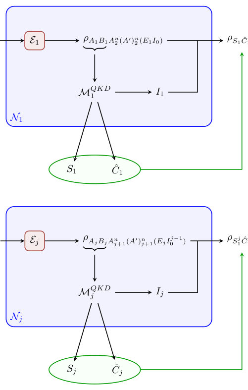
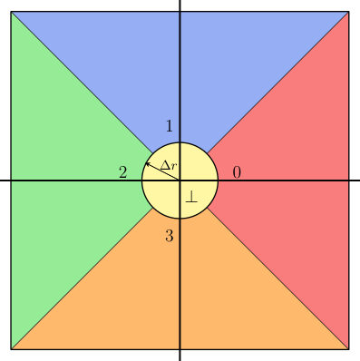
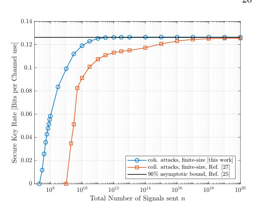
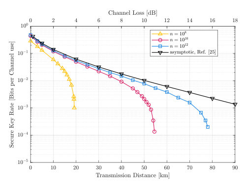
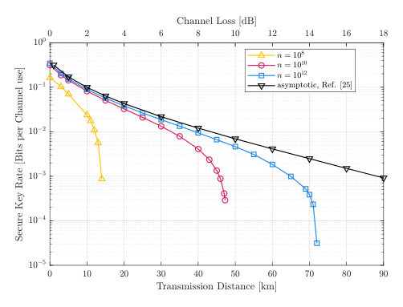
Summary. This paper resolves a long-standing security gap in Discrete-Modulated CV-QKD by providing the first complete composable finite-size security proof against coherent attacks. The authors introduce the iMEAT theorem and a dimension-reduction technique to handle infinite-dimensional security bounds. This breakthrough places CV-QKD on a rigorous security footing, paving the way for practical quantum key distribution deployment.
Why it may be interesting. This work provides a crucial theoretical underpinning for practical quantum communication, directly impacting the feasibility of deploying CV-QKD systems.
Main problem. To establish the first complete composable finite-size security proof for Discrete-Modulated (DM) Continuous-Variable (CV) Quantum Key Distribution (QKD) against coherent attacks.
Main result. The authors provide a rigorous security proof that recovers known asymptotic key rates and achieves positive key rates beyond 70km for experimentally relevant parameters.
Method. The proof introduces the infinite-dimensional marginal-constrained entropy accumulation theorem (iMEAT) and a dimension-reduction technique to make the infinite-dimensional security bounds numerically tractable.
Model / system. The work analyzes the DM CV-QKD protocol, which uses discrete modulation while maintaining compatibility with telecom infrastructure, and its security against coherent eavesdropping attacks.
Key observables. Composable secure key rate, conditional Rényi entropy, trace distance.
Important parameters / regimes. Error verification parameter ($\epsilon_{EV}$), privacy amplification parameter ($\epsilon_{PA}$), block size, distance (e.g., >70km).
Assumptions / limitations. The proof accounts for imperfect detectors and both fixed- and variable-length protocol variants, overcoming previous limitations regarding collective attacks or specific modulation formats.
Figures summary. The notes mention that Section VIII will show plots of achievable secure key rates.
Paper structure. The paper details the general DM CV-QKD protocol, introduces the iMEAT theorem and its proof, applies iMEAT to prove security for fixed- and variable-length variants, and concludes with the dimension reduction argument.
Discrete-Modulated (DM) Continuous-Variable (CV) Quantum Key Distribution (QKD) is an experimentally attractive approach to quantum cryptography, offering high key rates over metropolitan-scale distances while relying on state-of-the-art telecom infrastructure. However, a fundamental gap has remained between this experimental promise and rigorous security: for more than two decades, DM CV-QKD has lacked a complete composable finite-size security proof against coherent attacks. Existing works either restrict the adversary to collective attacks, impose additional finite-dimensional assumptions, apply only to specific modulation formats, or fail to recover the known asymptotic rates. Here, we resolve this longstanding problem by establishing the first complete composable finite-size security proof for DM CV-QKD protocols against coherent attacks, incorporating imperfect detectors and both fixed- and variable-length protocol variants. Our proof introduces two central results of broader interest: an infinite-dimensional marginal-constrained entropy accumulation theorem (iMEAT) and a rigorous dimension-reduction technique that makes the infinite-dimensional security bounds numerically tractable. The resulting key rates recover the known asymptotic rates and outperform established finite-size bounds based on collective attacks, while yielding positive key rates beyond $70$km for experimentally relevant block sizes and parameters. Thus, our work closes a longstanding gap and places an experimentally attractive class of CV-QKD protocols on a rigorous composable security footing and provides a pathway towards their practical deployment.
Authors: Leonardo Bacciottini, Subhransu Maji, Don Towsley, Gayane Vardoyan
Type: theory · Category: quantum information and computing · PDF: https://arxiv.org/pdf/2609.16198v1
Analysis basis: full PDF text, analyzed in chunks
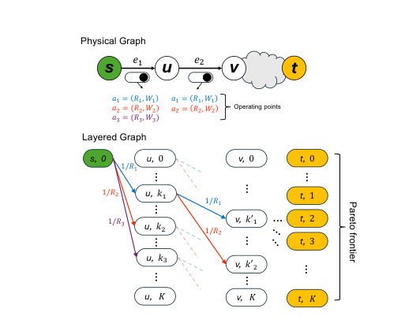
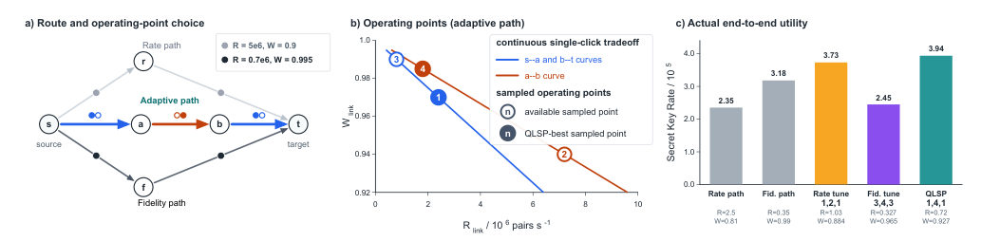
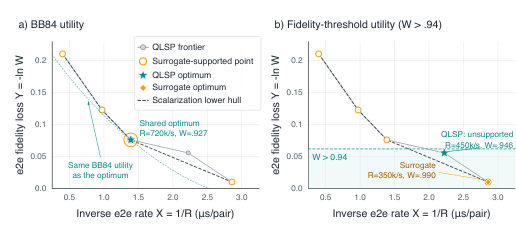
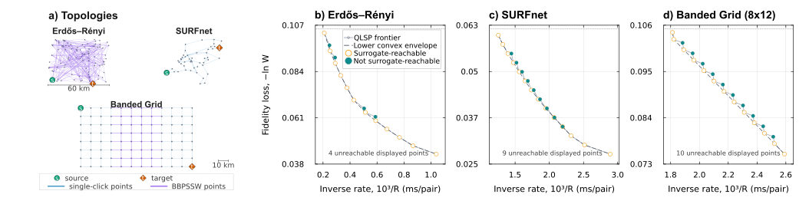
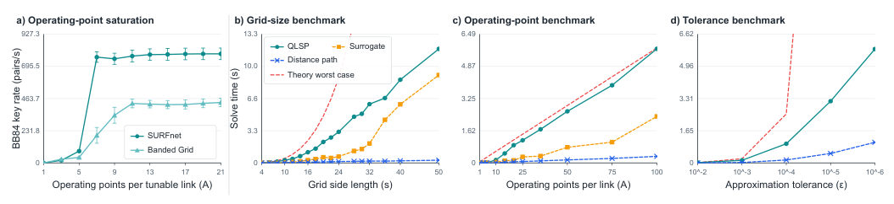
Summary. This work tackles the complex optimization of quantum network routing by jointly selecting paths and tuning link parameters to maximize a utility function of rate and fidelity. It introduces a layered graph shortest-path algorithm that accurately maps the achievable rate-fidelity frontier. This method is crucial because it handles non-additive resource composition, outperforming simpler linear optimization techniques.
Why it may be interesting. It provides a rigorous algorithmic framework for optimizing complex, non-additive resource trade-offs (rate vs. fidelity) in quantum communication, which is central to quantum networking research.
Main problem. The paper addresses the joint optimization problem of selecting a path and configuring link-level settings in quantum networks to maximize a utility function of end-to-end entanglement rate and fidelity.
Main result. A layered graph approach (QLSP) is developed that computes the full rate-fidelity Pareto frontier, providing an FPTAS for certain utility functions, unlike simpler scalarization methods.
Method. The problem is mapped onto a shortest path computation on a layered graph, where layers discretize the fidelity, and edge costs track the rate, allowing for the recovery of non-linearly combined performance metrics.
Model / system. The model is a quantum network distributing entanglement via repeaters, where link performance is characterized by a rate and a Werner state fidelity, which compose non-additively across the path.
Key observables. End-to-end entanglement rate ($R$), Fidelity ($F$), and the Werner parameter ($W$).
Important parameters / regimes. Discretization width ($\Delta$) for fidelity, and the number of hops/layers ($L$).
Assumptions / limitations. The analysis assumes Werner states at the elementary link level and relies on fidelity discretization, which introduces approximation guarantees.
Figures summary. Figures illustrate the comparison between the QLSP optimum, the best surrogate solution, and the lower convex envelope in the rate-fidelity plane, demonstrating the non-convexity of the global achievable set.
Paper structure. The paper first establishes the joint optimization problem, then introduces the layered graph formulation (QLSP) to compute the Pareto frontier. It contrasts this with scalarization methods, and finally analyzes the limitations regarding time multiplexing and continuous operating points.
A path in a quantum network is a chain of repeaters that distributes entanglement between two users. Selecting a path requires balancing the rate and quality (e.g., fidelity) of the delivered entanglement, but these quantities, unlike standard routing metrics, compose non-additively. The problem is compounded by link-level configuration choices (e.g., distillation rounds or emitter brightness tuning), each trading rate against fidelity, so that a path's performance depends jointly on its route and its per-link settings. We cast this joint path selection and configuration problem as a shortest path computation on a layered graph whose layers track discretized end-to-end fidelity. A single run returns the full rate fidelity Pareto frontier, from which the path maximizing any nondecreasing utility function of rate and fidelity can be selected. We prove that for certain utility functions (including the secret key rate of BB84), the method is a fully polynomial time approximation scheme, returning a near-optimal path within a specified tolerance. We further characterize exactly when cheaper scalarization-based routing suffices: it is optimal for utility functions with convex fidelity profiles, but can be arbitrarily suboptimal otherwise (e.g., for step-like, sigmoidal utilities), whereas the layered method remains reliable in all cases.
Papers from cond-mat.mtrl-sci, mes-hall, other, soft, supr-con. These archives are de-prioritized — they appear at the end regardless of relevance score.
Authors: Henri Vo Van Qui, Ignacio Madrid, Simon Grall, Thibaut Jonckheere, Akira Fujiwara, Laurent Jalabert, Masayuki Hashisaka, Christophe Demaille, Soo Hyeon Kim, Nicolas Clément
Type: both · Category: statistical mechanics · PDF: https://arxiv.org/pdf/2609.16783v1
Analysis basis: full PDF text, analyzed in chunks
Topic relevance: 🔥 Full counting statistics 4/5 · Keldysh / 2PI / non-Gaussian methods 1/5 · methods for driven-dissipative 1/5 · quantum measurements 1/5
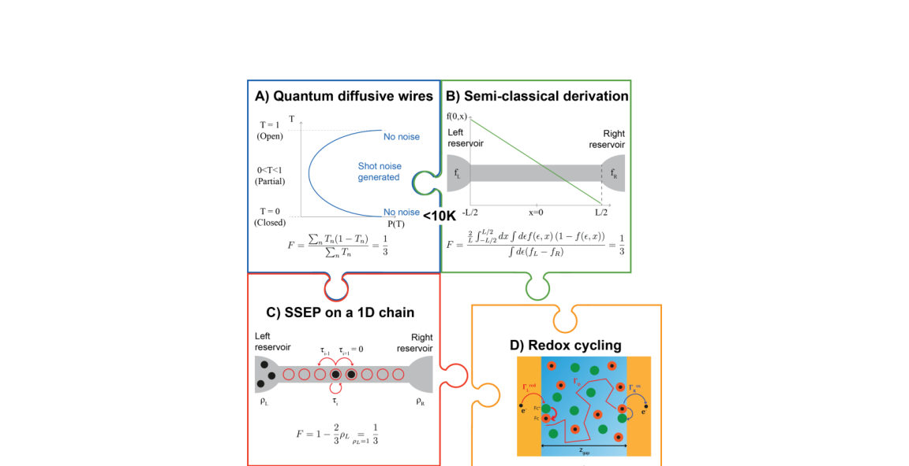
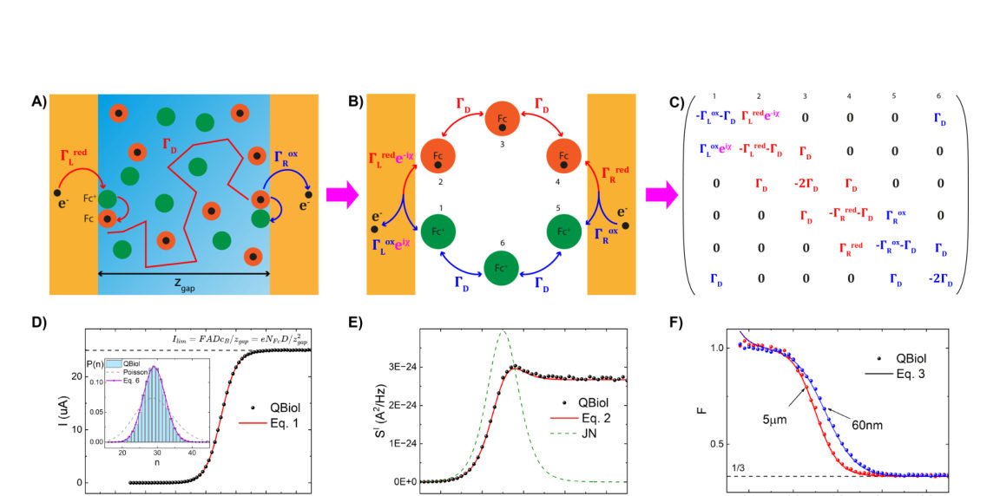
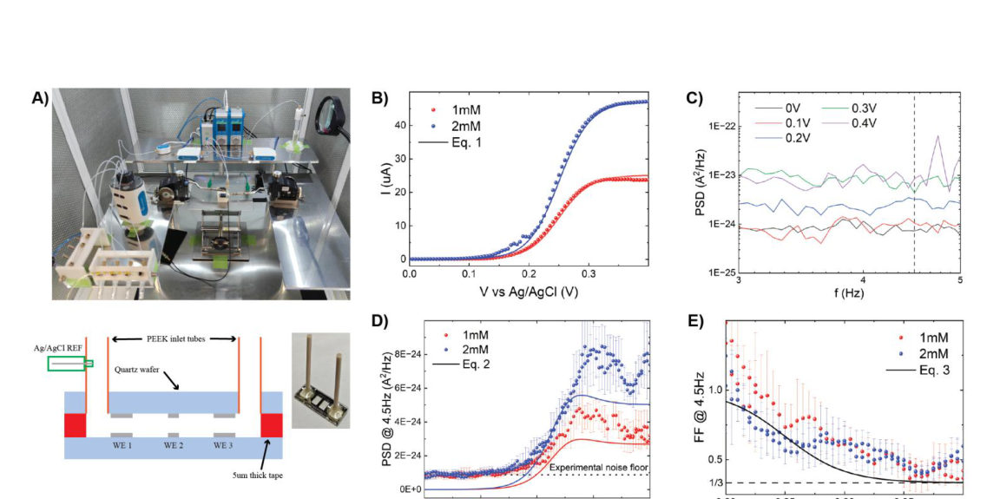
Summary. This work demonstrates the universal $1/3$ suppression of shot noise, a signature of diffusive conductors, using a room-temperature redox-cycling system. By combining advanced theoretical tools like Full Counting Statistics with microfluidic measurements, the authors bridge mesoscopic physics and electrochemistry. This opens a new avenue for studying quantum transport phenomena at ambient conditions.
Why it may be interesting. It provides a concrete, room-temperature platform to observe a fundamental mesoscopic quantum transport signature ($F=1/3$), bridging the gap between quantum theory and practical electrochemistry.
Main problem. The paper investigates the universal suppression of shot noise ($F=1/3$) in diffusive conductors, a phenomenon previously limited to cryogenic experimental conditions.
Main result. The universal $1/3$ shot noise suppression is successfully recovered at room temperature using a molecular redox-cycling system in a microfluidic gap.
Method. The analysis combines theoretical derivations using Full Counting Statistics (FCS) and solving Partial Differential Equations (PDEs) with experimental measurements on the noise spectrum.
Model / system. The system is a redox-cycling process involving ferrocene in a microfluidic gap, modeled using a discrete N-site approach and analyzed via rate matrix methods derived from quantum transport concepts.
Key observables. Fano factor ($F$), current ($I$), and noise spectral density ($S_I(V)$).
Important parameters / regimes. Room temperature operation, diffusion-limited regime, Nernstian regime, and the universal value $F=1/3$.
Assumptions / limitations. The analysis assumes the electrolyte high ionic strength screens electrostatics, allowing molecules to be treated as independent entities.
Figures summary. Figures show theoretical derivations confirming $F=1/3$ from various models, and experimental/simulation results confirming $S_I(V)$ and $F(V)$ approaching $1/3$ in the diffusion-limited regime.
Paper structure. The paper progresses from establishing the theoretical universality of $F=1/3$ (using FCS/SSEP) to applying this framework to a novel room-temperature electrochemical platform (redox cycling), confirming the theoretical predictions via simulation and experiment.
Diffusive conductors share a universal shot noise reduction of 1/3. This result can be obtained from quantum scattering, Boltzmann-Langevin kinetics, or by symmetric simple exclusion process, but experiments have been limited to cryogenic conditions and the understanding of this universality remains incomplete. Here we show that ferrocene redox cycling in a microfluidic gap is room temperature realization of this universality. An analytical model of the current and its noise is derived and confirmed experimentally. The universal 1/3 shot noise suppression is recovered in the diffusion-limited regime, providing a bridge between mesoscopic physics and electrochemistry, opening a new route for probing molecular dynamics through room-temperature noise measurements.
Authors: T. B. Charikova, V. N. Neverov, M. R. Popov, S. D. Popov, N. G. Shelushinina, A. A. Ivanov
Type: experiment · Category: strongly correlated electrons · PDF: https://arxiv.org/pdf/2609.16277v1
Analysis basis: full PDF text, analyzed in chunks
Topic relevance: analog quantum simulation 3/5 · non-equilibrium universality 3/5 · correlated / nonlocal dissipation 2/5 · driven-dissipative phase transition 2/5 · Frenkel-Kontorova 1/5 · Keldysh / 2PI / non-Gaussian methods 1/5 · methods for driven-dissipative 1/5 · quantum measurements 1/5
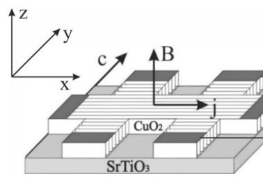
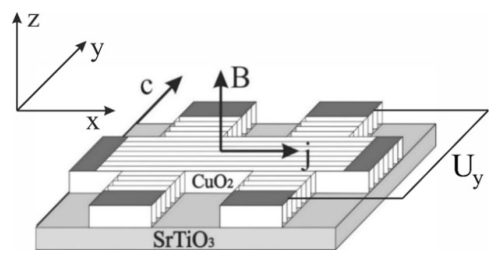
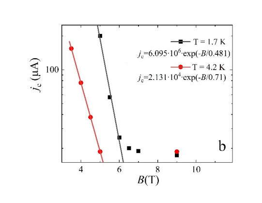
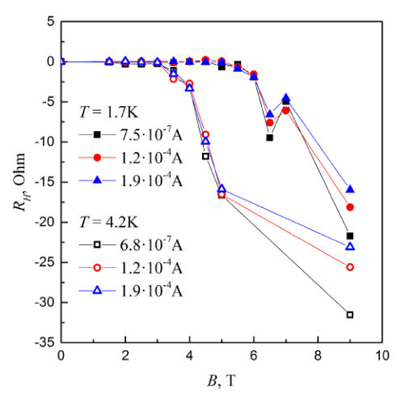
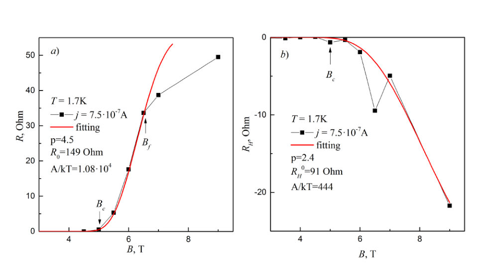
Summary. This paper experimentally measures the current-voltage characteristics of a layered high-temperature superconductor to study Josephson vortex motion. Key findings include establishing an exponential dependence for the critical depinning current and mapping the transition from flux creep to flux flow regimes. This work provides detailed insights into pinning mechanisms crucial for superconducting applications.
Why it may be interesting. The study of vortex dynamics and pinning in HTSCs provides a complex, non-equilibrium many-body problem that shares conceptual links with understanding energy dissipation and collective excitations in strongly correlated quantum materials.
Main problem. The study investigates the current-voltage characteristics and vortex dynamics in layered high-temperature superconductors under the influence of intrinsic pinning.
Main result. The critical depinning current for Josephson vortices exhibits an exponential dependence on the magnetic field, contrasting with the power law behavior seen for Abrikosov vortices.
Method. Measurements of the transverse voltage ($U_y$) in the Hall configuration were performed on epitaxial films using varying electric and magnetic fields.
Model / system. The physical system is epitaxial films of the layered superconductor Nd2-xCexCuO4/SrTiO3, focusing on the motion of Josephson vortices across CuO2 layers along the c-axis.
Key observables. Transverse voltage ($U_y$), critical depinning current ($j_{cc}(B)$), magnetoresistance ($R(B)$), and Hall resistance ($R_H(B)$).
Important parameters / regimes. Magnetic fields up to 9 T, helium temperatures (1.7 K and 4.2 K), and the crossover field ($B_{ff}$) separating flux creep and flux flow regimes.
Assumptions / limitations. The analysis assumes the intrinsic pinning mechanism dominates vortex dynamics, and the flux motion can be modeled using thermally activated flux-creep theory.
Figures summary. Figures illustrate the current-voltage (j vs U_y) characteristics and the magnetoresistance/Hall resistance dependence on the magnetic field.
Paper structure. The paper analyzes the CV characteristics, derives $R(B)$ and $R_H(B)$, models the flux creep regime using empirical fits, and discusses the transition to the flux flow regime.
The results of measurements of the transverse voltage in the Hall configuration, Uy, under conditions of motion of the charge and vortex subsystems in orhtogonal magnetic and electric fields on epitaxial films of the layered high-temperature superconductor Nd2-xCexCuO4 are presented. the motion of Josephson vortices across CuO2 layers (along the c-axis) is analyzed considering the effects of intrinsic pinning. An exponential dependence of critical depinning current jc(B) for Josephson vortices is established in contrast to the power law dependences for Abrikosov vortices. With increasing external magnetic field after the depinning by a magnetic field at B=Bc, the onset of the vortex creep regime, which evolves into the flux-flow regime at crossover field B=Bf, is observed.
Authors: A. I. Veretennikov, A. I. Galimov, M. M. Glazov, T. V. Shubina
Type: both · Category: other · PDF: https://arxiv.org/pdf/2609.17289v1
Analysis basis: full PDF text, analyzed in chunks
Topic relevance: driven-dissipative phase transition 3/5 · methods for driven-dissipative 3/5 · Keldysh / 2PI / non-Gaussian methods 2/5 · non-equilibrium universality 2/5 · quantum measurements 2/5 · analog quantum simulation 1/5 · correlated / nonlocal dissipation 1/5
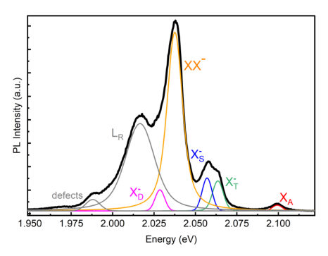
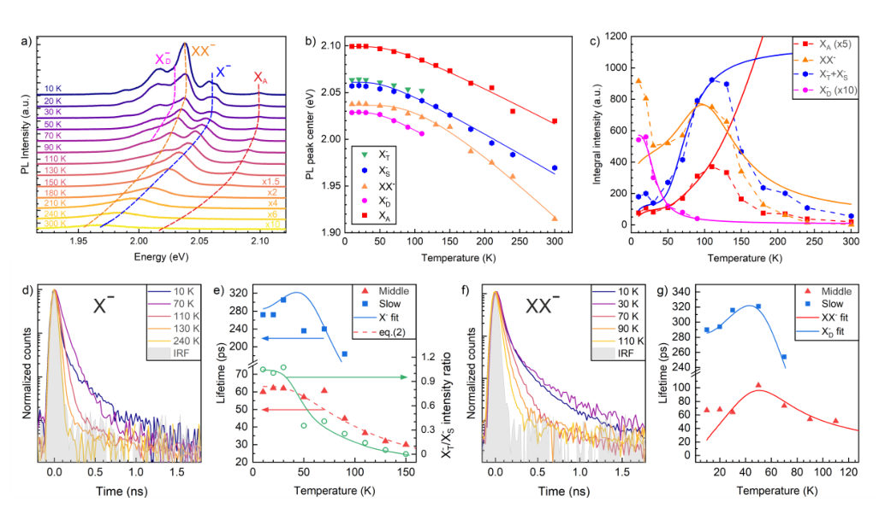
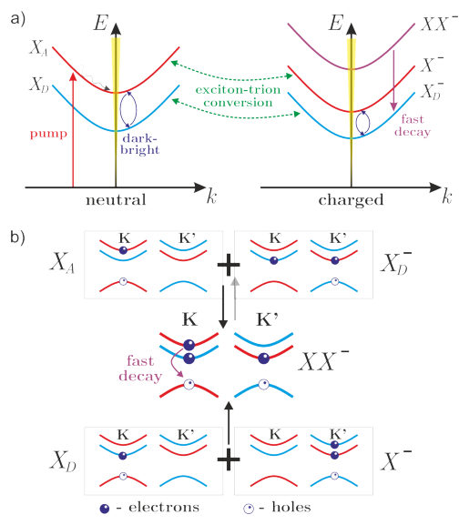
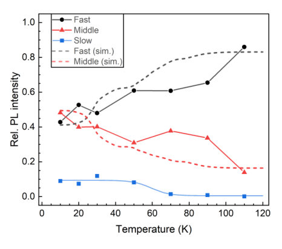
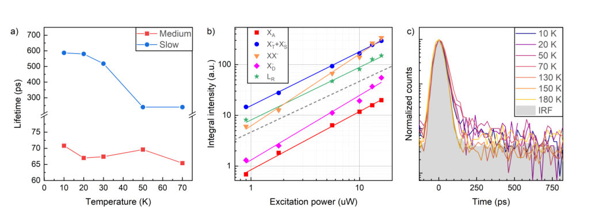
Summary. This paper analyzes the complex photoluminescence kinetics in WS2 monolayers, showing that exciton emission arises from a single, interacting ensemble of charged and neutral states. By developing and applying a self-consistent rate equation model, the authors successfully reproduce the temperature dependence of the luminescence, revealing crucial roles for dark states in populating and sustaining the bright emission.
Why it may be interesting. The work provides a detailed, quantitative framework for modeling open quantum systems in solid-state materials, specifically demonstrating how coupling between different quantum states (dark/bright excitons) dictates macroscopic optical properties.
Main problem. The study investigates the complex, interacting luminescence kinetics of various charged and neutral exciton states within a WS2 monolayer.
Main result. The emission is not dominated by single-particle excitons but by an interacting ensemble, where dark trions contribute a long-lived component to the bright trion, and replenishment from dark states promotes intense charged biexciton luminescence.
Method. The authors developed and utilized a self-consistent rate equation model, validated by time-resolved photoluminescence (TRPL) measurements across varying temperatures.
Model / system. The physical system is a WS2 monolayer, modeled using rate equations that account for single-particle decay, temperature-dependent transitions (e.g., dark-to-bright), and nonlinear processes like biexciton formation.
Key observables. Characteristic decay times (fast, middle, slow components) for trions and biexcitons, and the temperature dependence of PL peak energies and intensities.
Important parameters / regimes. Temperature range (8 to 300 K), electron density ($\sim 10^{12} ext{ cm}^{-2}$), and characteristic timescales (e.g., $200-300 ext{ ps}$ for dark trion contribution).
Assumptions / limitations. The model assumes that the population dynamics of all relevant exciton complexes can be described by coupled rate equations, and that the system is governed by thermal activation processes between states.
Figures summary. Figures illustrate the PL spectra decomposition, temperature dependence of peak energies/intensities, and the multi-component decay curves for the trion and biexciton lines.
Paper structure. The paper establishes the physical system and measurements (PL/TRPL) by reviewing prior work, develops a comprehensive rate equation model incorporating multiple interacting species, and then uses this model to fit and explain the temperature and time evolution of the observed luminescence kinetics.
Two-dimensional tungsten-based transition metal dichalcogenides exhibit a rich emission spectrum with distinct lines of exciton and biexciton states, neutral and charged, which are typically considered as independent entities. Here, we present a study of the emission kinetics of a WS$_2$ monolayer, demonstrating that these states together form a single interacting ensemble, with their population and depletion mutually coordinated with temperature. Dark trions make a long-lived contribution to the bright trion on a time scale of 200-300 picoseconds, and replenishment from dark states promotes intense luminescence of charged biexcitons. The developed self-consistent rate equation model reproduces the temperature dependence of the kinetics well, opening the way to controlling exciton states in such materials.
Authors: Sourav Karmakar, Santanu K. Maiti
Type: theory · Category: other · PDF: https://arxiv.org/pdf/2609.17069v1
Analysis basis: full PDF text, analyzed in chunks
Topic relevance: analog quantum simulation 3/5 · Frenkel-Kontorova 2/5 · Keldysh / 2PI / non-Gaussian methods 2/5 · methods for driven-dissipative 1/5
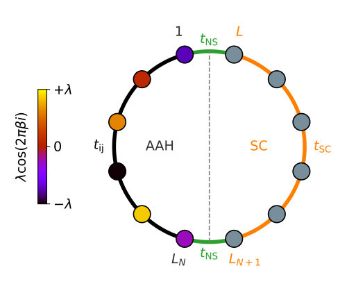
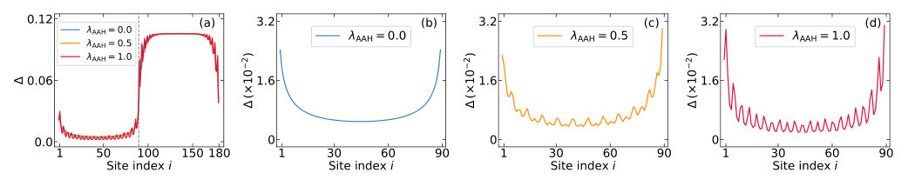
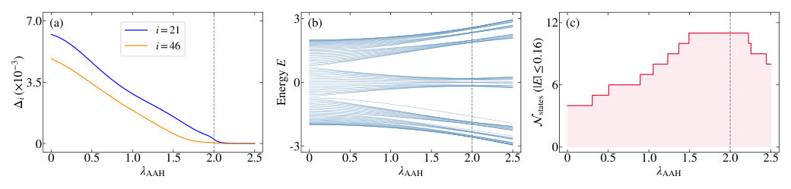
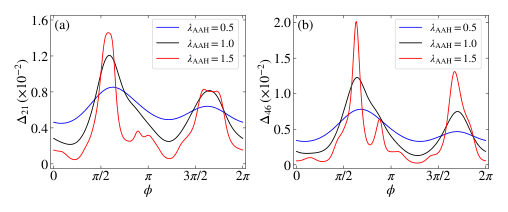
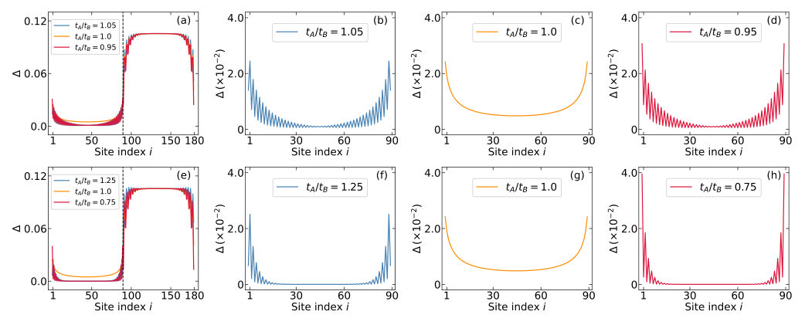
Summary. This work theoretically examines how superconductivity leaks into a normal metal region embedded in a 1D hybrid ring. By modeling the normal region with both quasiperiodic (AAH) and dimerized (SSH) potentials, the authors show that these two effects act semi-independently yet synergistically to control the superconducting order parameter. The findings provide a versatile theoretical framework for engineering superconducting correlations in complex, low-dimensional quasiperiodic materials.
Why it may be interesting. The explicit modeling of proximity effects in quasiperiodic structures connects concepts from topological physics (SSH) and localization theory (AAH) to superconducting phenomena, which is highly relevant for understanding engineered quantum materials.
Main problem. The paper investigates how the superconducting proximity effect in a 1D hybrid ring is controlled by the interplay between lattice dimerization and quasiperiodicity.
Main result. Dimerization dictates the oscillatory behavior and penetration depth of the induced pairing, while the quasiperiodic potential enhances spatial inhomogeneity and further reduces the pairing magnitude.
Method. The study employs the self-consistent Bogoliubov-de Gennes (BdG) formalism to calculate the superconducting order parameter profile.
Model / system. The system is a 1D hybrid ring connecting a spin singlet superconductor to a normal region modeled sequentially by the Aubry-André-Harper (AAH) model, the Su-Schrieffer-Heeger (SSH) chain, and their combination.
Key observables. Spatial variation and penetration depth of the proximity-induced pairing amplitude ($\Delta_i$), and the evolution of $\Delta_i$ across localization transitions.
Important parameters / regimes. Quasiperiodic potential strength ($\lambda_{AAH}$), dimerization strength (SSH hopping ratio $t_A/t_B$), and the coupling strength ($t_{NS}$).
Assumptions / limitations. The analysis is performed at zero temperature and relies on the BdG mean-field approximation.
Figures summary. Figure 1 schematically shows the 1D hybrid ring structure. Figure 2 illustrates the spatial profile of the order parameter $\Delta_i$ for varying quasiperiodic potentials.
Paper structure. The paper systematically analyzes the system by first considering the AAH model, then the SSH chain, and finally combining both effects in the SSH-AAH model to map out the parameter space.
Recent studies of the superconducting proximity effect in quasicrystalline and topological systems have opened up a new research direction for exploring how quasiperiodicity and topology influence proximity induced superconductivity. In this work, we investigate spatial variation of the proximity induced pairing amplitude in a hybrid ring composed of a spin singlet superconductor and a normal region described by three different lattice models using the self-consistent Bogoliubov-de Gennes formalism. We first consider the normal region described by the diagonal Aubry-André-Harper (AAH) model. Increasing the quasiperiodic potential enhances spatial fluctuations in the induced order parameter, while progressively suppressing its magnitude in the normal region. Beyond the localization transition, proximity-induced pairing is strongly diminished due to the localized nature of the underlying electronic states. The normal region is then modeled by the Su-Schrieffer-Heeger (SSH) chain to investigate the effect of hopping dimerization. Weak dimerization introduces oscillatory modulations in the induced pairing that extend deep into the normal region, whereas strong dimerization confines these oscillations and significantly reduces the penetration of superconducting correlations. Finally, we study the combined SSH-AAH model to explore the interplay between the dimerized hopping and quasiperiodicity. The results show that the SSH dimerization determines the oscillatory behavior and penetration of the induced pairing, while the AAH potential enhances spatial inhomogeneity and further reduces its magnitude. Together, these two effects provide a versatile means of controlling proximity-induced superconductivity in quasiperiodic hybrid systems.
Authors: Philipp Schmidt, Mathies Funke, Till Tenger, Katarina Stanojević, Hubert Dulisch, Kenji Watanabe, Takashi Taniguchi, Fabian Hassler, Christian Volk, Szabolcs Csonka, Christoph Stampfer
Type: experiment · Category: other · PDF: https://arxiv.org/pdf/2609.16320v1
Analysis basis: full PDF text, analyzed in chunks
Topic relevance: analog quantum simulation 2/5 · quantum measurements 2/5 · correlated / nonlocal dissipation 1/5 · driven-dissipative phase transition 1/5
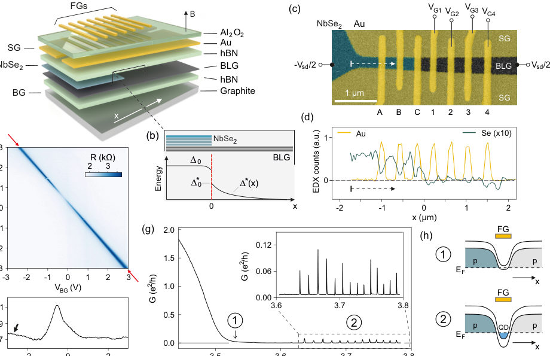
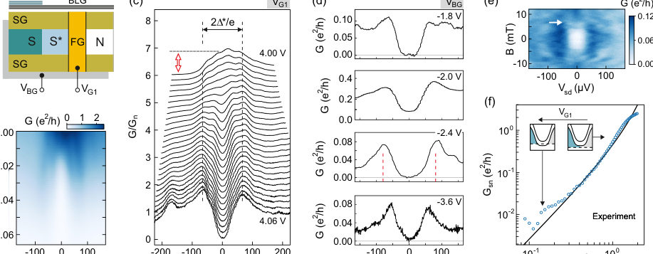
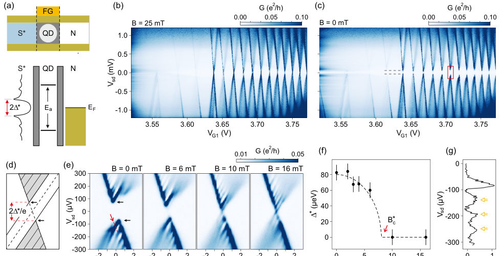
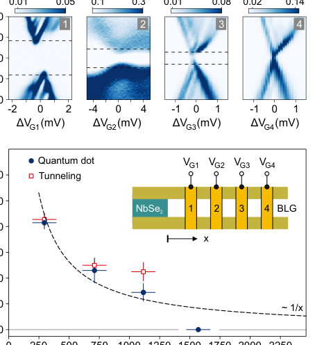
Summary. This experiment demonstrates a highly controllable all-2D platform using bilayer graphene proximitized by a superconductor ($ ext{NbSe}_2$). By integrating gate-defined quantum dots, the researchers measured the proximity-induced superconducting gap ($\Delta^*$) and mapped its decay as a function of distance. This work establishes $ ext{BLG/NbSe}_2$ hybrids as a versatile tool for studying superconducting correlations in nanoscale electronic devices.
Why it may be interesting. The ability to electrostatically control the superconducting coupling strength and map the resulting gap spatially provides a clean platform to test theoretical models of superconducting proximity effects in 2D materials, relevant to topological superconductivity.
Main problem. The study aims to probe the proximity-induced superconducting gap in bilayer graphene (BLG) by integrating gate-defined quantum dots into a superconducting hybrid platform.
Main result. The researchers successfully measured a proximity-induced superconducting gap up to $80\,\mathrm{\mu eV}$ and mapped its decay spatially, confirming the tunability of superconducting correlations in this all-2D system.
Method. Transport measurements, including Coulomb blockade and finite-bias spectroscopy, were performed on $ ext{BLG}$ patterned into quantum dots coupled to a superconducting $ ext{NbSe}_2$ region.
Model / system. The platform is an all-2D hybrid structure combining $ ext{BLG}$ (electrostatically tunable) with superconducting $ ext{NbSe}_2$. Quantum dots act as local probes forming $ ext{S–S}^*- ext{QD–N}$ junctions.
Key observables. Proximity-induced superconducting gap ($\Delta^*$), local density of states (LDOS) suppression, and conductance ($G$) as a function of bias voltage and gate voltages.
Important parameters / regimes. Superconducting gap magnitude ($\Delta^* \approx 80\,\mathrm{\mu eV}$), decay length ($\sim 1\,\mathrm{\mu m}$), and critical magnetic field ($B^*_c \simeq 8 ext{ mT}$).
Assumptions / limitations. The gap decay follows a ballistic scaling law $\Delta^*(x) \sim \pi\hbar v/(4x)$, and the system operates in a highly ballistic regime.
Figures summary. Figures illustrate the device structure, the decay of the proximity gap with distance, and differential conductance measurements showing gap features and Coulomb diamonds.
Paper structure. The work systematically demonstrates the ability to create and probe superconducting proximity effects by first establishing the device geometry, then measuring the gap magnitude, and finally mapping its spatial dependence across the $ ext{BLG}$ channel.
Van der Waals heterostructures offer a direct way of combining two-dimensional (2D) materials with different electronic properties, such as 2D semiconductors, metals, and superconductors, in a single device. Bilayer graphene (BLG) is particularly attractive in this context, as its electrically tunable band gap enables local control of tunnel barriers and quantum dots. Here, we realize an all-2D hybrid platform based on BLG proximitized by superconducting NbSe$_2$. Using local electrostatic gates, we define tunnel barriers and quantum dots at different distances from the lateral superconductor-semiconductor interface. The quantum dots serve as local spectroscopic probes of the proximitized BLG channel segment, forming tunable superconductor-quantum dot-normal conductor junction devices. Coulomb blockade and finite-bias spectroscopy reveal a proximity-induced superconducting gap of up to $80\,\mathrm{μeV}$ and allow to track its evolution with increasing distance from the NbSe$_2$ contact. We find that the local density of states remains suppressed over distances exceeding 1 $μ$m, consistent with superconducting proximity through a highly ballistic BLG channel. Our results show that BLG-superconductor hybrids offer a controllable platform where quantum dots and quantum point contacts can be well combined with superconductivity.
Authors: Adrián García-Martín, Sara Gullace, Nicolás Montenegro-Pohlhammer, María José Martínez-Pérez, Rocío Sánchez-de-Armas, Carmen J. Calzado, Enrique Burzurí
Type: both · Category: other · PDF: https://arxiv.org/pdf/2609.16725v1
Analysis basis: full PDF text, analyzed in chunks
Topic relevance: analog quantum simulation 2/5 · quantum measurements 2/5 · Keldysh / 2PI / non-Gaussian methods 1/5
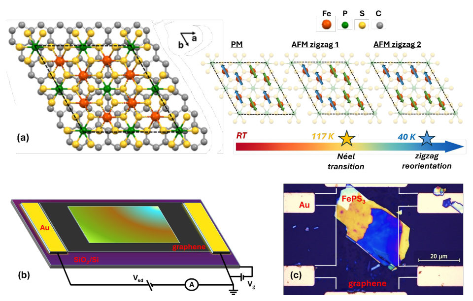
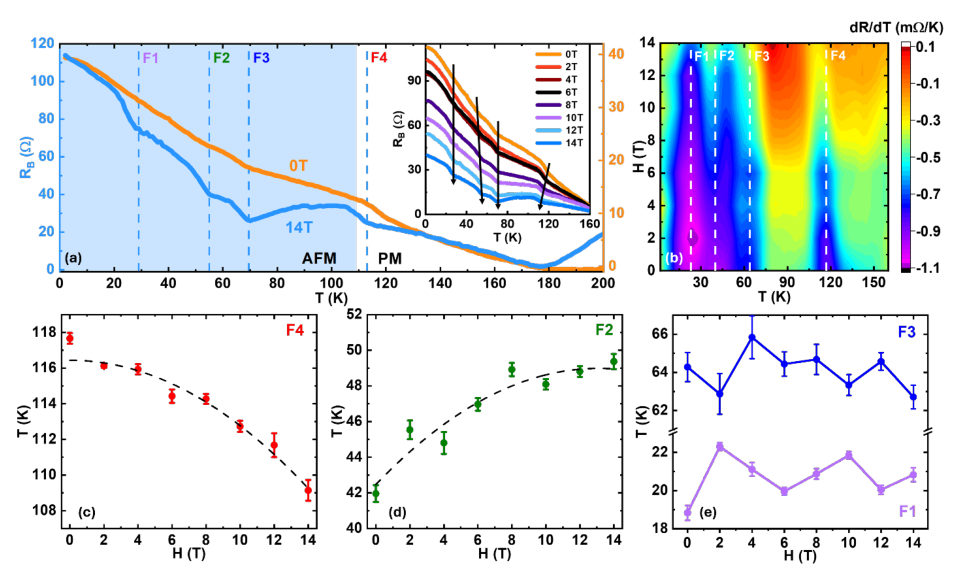

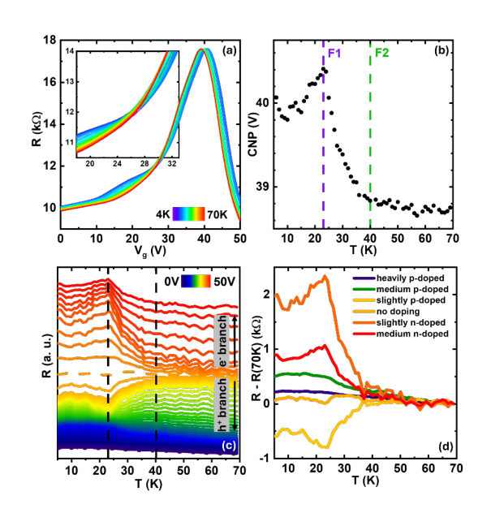
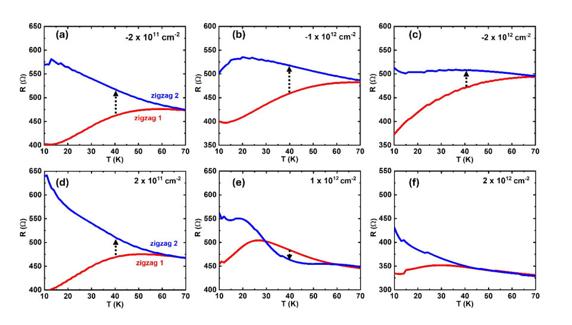
Summary. This work pioneers the use of graphene as an electrical transducer to probe hidden spin dynamics in 2D antiferromagnets like $ ext{FePS}_3$. By measuring transport resistance under magnetic and gate-voltage control, the authors identify signatures corresponding to magnon excitations and magnetic phase changes. This establishes a versatile platform for electrical readout of magnetism in 2D quantum materials.
Why it may be interesting. The ability to transduce subtle, non-magnetic spin dynamics into a measurable electrical signal is highly relevant for developing novel quantum sensors and reading out quantum states in magnetic materials.
Main problem. The primary challenge addressed is the electrical probing of subtle, hidden spin dynamics within low-dimensional, insulating antiferromagnetic (AFM) van der Waals materials.
Main result. The authors demonstrate that graphene acts as an ultrasensitive electrical transducer, allowing the measurement of magnon excitations and magnetic reconfigurations in the AFM state via transport anomalies.
Method. The study combines low-temperature transport measurements (measuring resistance $R$ vs. $T, H, V_g$) with first-principles Density Functional Theory (DFT) calculations.
Model / system. The physical system is a graphene/antiferromagnetic van der Waals heterostructure, specifically using $ ext{FePS}_3$. DFT models the electronic structure and magnetic configurations (zigzag1/zigzag2) of the interface, while transport calculations use the Boltzmann theory.
Key observables. Resistance anomalies ($R$ dips), temperature dependence of anomalies, magnetic field dependence of the Néel temperature ($T_N$), and gate-voltage tunability of electrical signatures.
Important parameters / regimes. Low temperatures (down to 3 K), magnetic fields (up to 14 T), and electrostatic gate voltages ($V_g$).
Assumptions / limitations. The current flow is assumed to be predominantly through the graphene layer, and DFT calculations rely on the rigid band approximation for conductivity modeling.
Figures summary. Figures show transport measurements ($R$ vs. $T, H, V_g$) revealing multiple resistance anomalies below $T_N$, and DFT calculations illustrate the magnetic configurations and electronic response of the interface.
Paper structure. The paper establishes the physical challenge, presents the experimental setup (GFET measurements), details the observed magnetic transitions (Néel, phase reorientation), and supports these findings with detailed DFT calculations of the electronic coupling.
Low-dimensional antiferromagnetic van der Waals materials have emerged as a versatile platform for exploring exotic spin dynamics and magnetic phases, yet electrically accessing these phenomena remains a major challenge because of their vanishing net magnetization and highly insulating nature. Here, we demonstrate that graphene can act as an ultrasensitive electrical transducer of hidden spin dynamics in two-dimensional antiferromagnets. By integrating graphene with the van der Waals antiferromagnet FePS$_3$, low-temperature transport measurements combined with magnetic-field and gate-voltage control reveal multiple resistance anomalies well below the Néel temperature. Their distinct temperature, magnetic-field, and carrier-density dependences enable us to associate these anomalies with magnon excitations and with a low-temperature magnetic reconfiguration of the antiferromagnetic state, both of which remain largely inaccessible to conventional magnetometry. Density functional theory calculations further show that competing antiferromagnetic spin configurations in FePS$_3$ are nearly degenerate in energy while producing markedly different electronic responses in the adjacent graphene layer. The pronounced electrostatic tunability of these signatures demonstrates that graphene directly transduces interfacial magnetic dynamics into an electrical signal. Our work establishes graphene/antiferromagnetic van der Waals heterostructures as a versatile platform for the electrical readout of spin dynamics in two-dimensional magnets.
Authors: Abhijeet Dhakane, Alireza Sepehrinezhad, William Prudnick, Jon-Paul Maria, Bobby Sumpter, Adri C. T. van Duin, Kyle P. Kelley, P. Ganesh
Type: both · Category: other · PDF: https://arxiv.org/pdf/2609.16570v1
Analysis basis: full PDF text, analyzed in chunks
Topic relevance: Frenkel-Kontorova 1/5 · Keldysh / 2PI / non-Gaussian methods 1/5 · analog quantum simulation 1/5 · driven-dissipative phase transition 1/5 · methods for driven-dissipative 1/5 · non-equilibrium universality 1/5
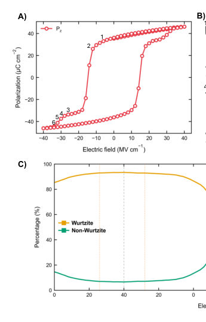
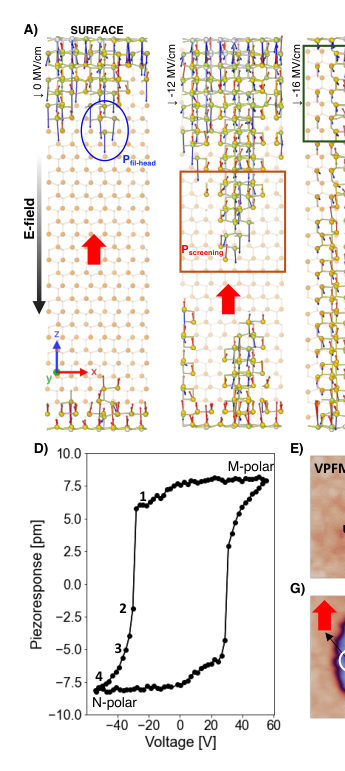
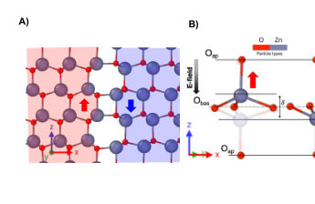
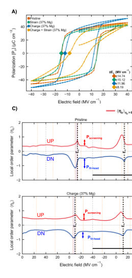
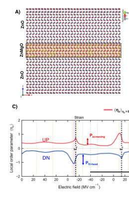
Summary. This work uses reactive molecular dynamics to investigate why wurtzite ferroelectrics have high coercive fields. The research identifies that the field is set by the local polarization required at the advancing switching filament head. By showing that charge doping is more effective than strain in reducing this local barrier, the authors propose a materials design principle for creating low-field ferroelectric devices.
Why it may be interesting. While focused on solid-state ferroelectrics, the study's detailed atomistic simulation of non-equilibrium phase transitions, domain wall dynamics, and field-induced structural reconstruction provides valuable insights into complex many-body dynamics far from equilibrium.
Main problem. The large coercive fields in wurtzite ferroelectrics limit their operational window for non-volatile memory devices, and the microscopic origin of this field remains unresolved.
Main result. The coercive field is determined by the local polar-order amplitude required to advance the reconstructed inversion-boundary filament head, and charge redistribution is a more effective way to lower this field than strain alone.
Method. The study uses large-scale reactive molecular dynamics, parameterized against first-principles data, to simulate field-driven polarization reversal.
Model / system. The system is ZnO-based wurtzite ferroelectrics, studied in pristine, Mg-modified, and heterostructured (ZnO/ZnMgO) forms. The simulation tracks the dynamics of polarization reversal through inversion-boundary filaments.
Key observables. Hysteresis loops, local polar-order vectors, the advancing filament head polarization ($P_{ ext{fil-head}}$), and the polarization imbalance ($\Delta$).
Important parameters / regimes. Coercive field ($E_c$), applied electric field, strain magnitude, and charge doping concentration.
Assumptions / limitations. The switching mechanism is governed by the advancement of a specific, under-coordinated, reconstructed inversion-boundary region.
Figures summary. Figures illustrate the polarization-field response, the evolution of inversion-boundary filaments, the core-shell structure of the switching front, and the dependence of $E_c$ on local polarization imbalance ($\Delta$) for different perturbations.
Paper structure. The paper establishes the problem (high $E_c$), develops the mechanism (filament advancement controlled by the head), compares perturbations (charge vs. strain), and proposes a design principle using heterostructures to engineer lower switching fields.
Wurtzite ferroelectrics offer a route to semiconductor-compatible non-volatile devices, but their large coercive fields (E$_c$) constrain the operating window between polarization reversal, leakage and dielectric breakdown. Atomically localized and non-classical switching fronts have recently been identified in wurtzite nitrides, yet the microscopic feature that sets the coercive field remains unresolved. Here we use large-scale reactive molecular dynamics, parameterized against first-principles data, to follow field-driven reversal in pristine, Mg-modified and heterostructured ZnO. Reversal proceeds through rugged inversion-boundary filaments in agreement with recent observations in other wurtzite ferroelectrics. We find that the field required for switching is controlled by the advancing filament head, which is a under-coordinated reconstructed inversion-boundary region during the transient switching dynamics with a large field-aligned local polar-order amplitude that is only partially compensated by an oppositely oriented surrounding shell. Controlled strain-only and charge-doping-only perturbations show that charge redistribution lowers the coercive field more effectively than strain because it suppresses this field-setting unscreened local polar order at the filament head, with the combined effect lowering E$_c$ by $\sim$ 50 \%. Layered ZnO/ZnMgO architectures further create buried nucleation sites and shorten filament propagation lengths. These results connect atomistic switching topology to a materials-design principle for substantially reducing coercive fields in ZnO-based wurtzite ferroelectrics.
Authors: Miguel Moreno, Rocio Yanes, Luis Lopez-Diaz
Type: theory · Category: other · PDF: https://arxiv.org/pdf/2609.16904v1
Analysis basis: full PDF text, analyzed in chunks
Topic relevance: Frenkel-Kontorova 1/5 · Keldysh / 2PI / non-Gaussian methods 1/5 · correlated / nonlocal dissipation 1/5 · driven-dissipative phase transition 1/5 · methods for driven-dissipative 1/5 · non-equilibrium universality 1/5
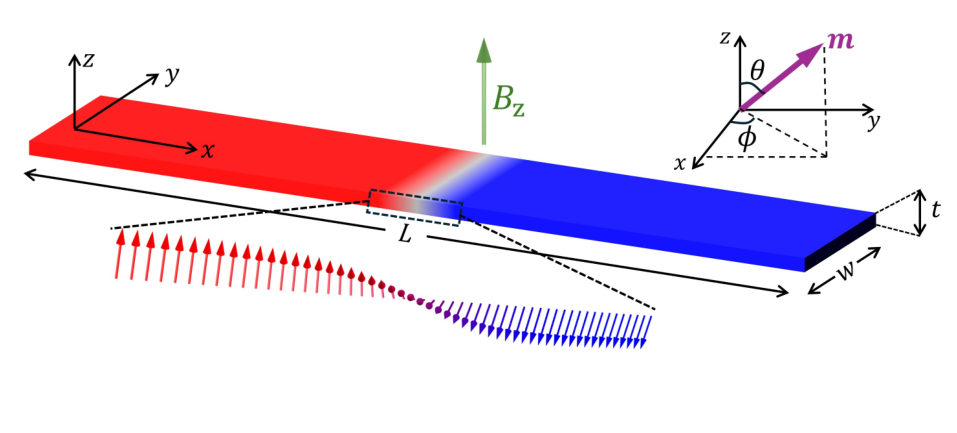
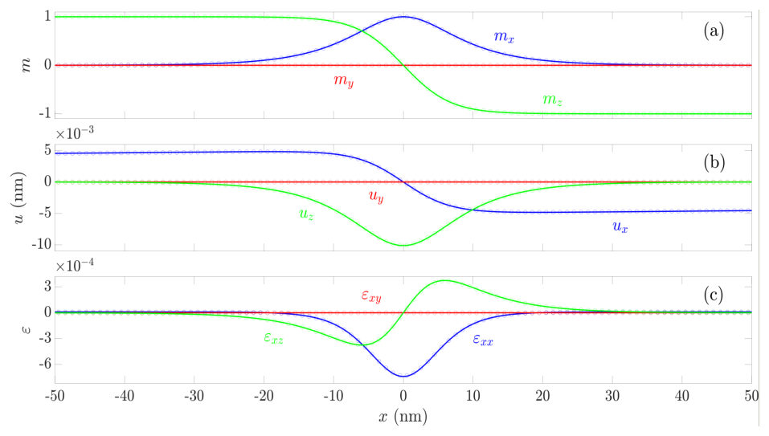
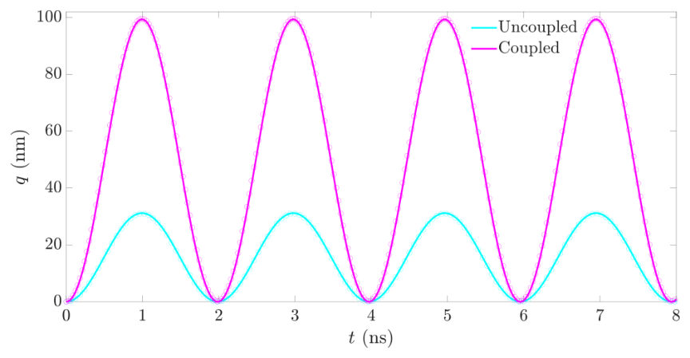
Summary. This paper analyzes the propulsion of magnetic domain walls in magnetostrictive materials by coupling micromagnetics with elastodynamics. It demonstrates that mechanical damping acts as a crucial, non-magnetic energy sink, enabling steady-state DW motion even when intrinsic magnetic damping is absent. This reveals a fundamental energy exchange mechanism vital for designing advanced acoustic spintronic devices.
Why it may be interesting. While focused on classical condensed matter physics, the concept of energy dissipation channels (mechanical vs. magnetic) and the mapping of one dissipation mechanism onto an effective damping parameter ($\alpha_{me}$) is highly relevant to understanding energy loss in quantum-limited spintronic devices.
Main problem. The study investigates how elastic damping in magnetostrictive materials propels magnetic domain walls (DWs) by providing a non-magnetic energy dissipation channel.
Main result. Mechanical damping sustains DW motion even when intrinsic Gilbert damping is zero, and the resulting asymmetric stress gradients exert direct propelling forces balancing field-induced precession.
Method. The research employs a fully coupled micromagnetic-elastodynamic framework, supplemented by an analytical 1D collective coordinates model for simplification.
Model / system. The system models a perpendicularly magnetized magnetostrictive ferromagnet (e.g., in an ultrathin nanowire) where magnetization dynamics (LLG equation) are coupled to mechanical displacement (elastodynamic wave equation) via magnetoelastic interactions.
Key observables. Localized stress tensor profiles ($\sigma_{xx}, \sigma_{xy}, \sigma_{xz}$), DW velocity ($v_{dw}$), and the effective magnetoelastic damping parameter ($\alpha_{me}$).
Important parameters / regimes. Intrinsic Gilbert damping ($\alpha$), elastic damping constant ($\eta$), magnetostriction constants ($\lambda_{100}, \lambda_{111}$), and applied magnetic field ($B_z$).
Assumptions / limitations. The analysis often relies on a 1D reduction of the full 3D problem, assuming transverse mechanical modes are frozen or that the dynamics are subsonic.
Figures summary. Figures illustrate the DW position, velocity vs. field, and profiles of magnetization, mechanical displacement, and strain under various damping conditions.
Paper structure. The paper progresses from establishing the coupled governing equations (LLG and elastodynamics) to solving the static equilibrium profiles, and finally analyzing the dynamic regimes, particularly focusing on the steady-state balance equations derived from the collective coordinates model.
The interaction between magnetic and elastic degrees of freedom is increasingly central to advanced spintronics technology. In magnetostrictive materials, a moving domain wall carries a localized elastic deformation. Here, we investigate these elastic deformations and their back-action on field-driven domain wall dynamics using a fully coupled micromagnetic-elastodynamic framework and an analytical collective coordinates model. We show that mechanical damping acts as a non-magnetic dissipation channel, extracting energy from the magnetic texture and sustaining translational domain wall motion even in the complete absence of intrinsic Gilbert damping ($α=0$). Specifically, elastic damping impacts domain wall dynamics in a manner equivalent to magnetic losses, allowing us to map it onto an effective magnetoelastic contribution to the Gilbert damping parameter, $α_\text{me}$. We calculate the localized stress tensor profiles co-moving with the domain wall and show that mechanical dissipation breaks their spatial symmetry. Using our collective coordinates model, we demonstrate that these asymmetric stress profiles-specifically the localized stress gradients across the wall core-exert direct propelling forces that balance field-induced magnetic precession, enabling steady-state motion. Overall, these findings reveal a fundamental energy transfer and relaxation mechanism between magnetic and elastic subsystems, providing valuable insights for controlling magnetic texture dynamics via strain engineering and mechanical damping design in acoustic spintronic devices.
Authors: A. A. Burkov
Type: theory · Category: disordered systems and neural networks · PDF: https://arxiv.org/pdf/2609.16124v1
Analysis basis: full PDF text, analyzed in chunks
Topic relevance: Keldysh / 2PI / non-Gaussian methods 1/5 · analog quantum simulation 1/5
Summary. This theoretical work determines the robustness of topological protection in metals when disorder is introduced. It finds that only 3D Weyl semimetals maintain their nontrivial topological character against Anderson localization, while other semimetallic classes are susceptible to disorder-induced localization. The methodology relies on analyzing topological anomalies using advanced gauge field constructions.
Why it may be interesting. The rigorous connection between topological invariants (anomalies) and localization physics provides a powerful theoretical tool for understanding how fundamental symmetries dictate transport properties in disordered quantum materials, which is relevant to open quantum systems.
Main problem. The paper investigates whether the nontrivial topological characteristics of topological metals (TMs) survive when subjected to disorder, specifically addressing whether topology protects them from Anderson localization.
Main result. Protection against Anderson localization is demonstrated for 3D Weyl semimetals, but fails for 2D and 3D Dirac or nodal line semimetals, as their topological responses are compatible with localized states.
Method. The analysis combines the concept of unquantized anomalies (a topological response) with the decorated domain wall construction, using gauge field formalisms derived from crystal plane phase functions.
Model / system. The study focuses on various topological metals, including Weyl semimetals, Dirac semimetals, and nodal line semimetals, examining their behavior under random disorder potentials.
Key observables. Long-range entanglement, topological response coefficients ($\lambda$), and the failure of gauge invariance (anomaly) upon introducing vortices.
Important parameters / regimes. Dimensionality (2D vs 3D), symmetry protection (e.g., TR-invariance), and the degree of disorder realization.
Assumptions / limitations. The concept of gaplessness loses meaning in disorder, requiring entanglement as the key diagnostic; the analysis assumes symmetry restoration on long length scales.
Paper structure. The paper progresses by first establishing the topological response formalism using gauge fields, then applying this framework to analyze the stability of different classes of TMs (Weyl, Dirac, nodal line) under disorder, culminating in a comparative statement on which systems retain protection.
We address the question of whether topological metals (TM) retain their nontrivial characteristics in the presence of disorder. While in the clean case, the issue is what protects the gaplessness of the spectrum, i.e. the band-touching nodes in TM, this question needs to be reformulated in the presence of disorder. The concept of gaplessness loses its sharp meaning in this case, since spectral gaps can be filled in by disorder-induced states. What is still meaningful is entanglement: one may ask whether the long-range entanglement of the clean gapless TM survives in the presence of disorder or, in other words, whether nontrivial topology protects the TM from Anderson localization. We demonstrate that such a protection exists in the case of three-dimensional (3D) Weyl semimetals, but not in 2D and 3D (type-I) Dirac or 3D nodal line semimetals. We establish this by combining the idea of unquantized anomaly as the topological response of TM with the decorated domain wall construction, used previously to discuss average symmetry-protected topological insulating phases.
Authors: Dong-gyu Kim, Kisung Kang, Hani Kang, Kihyun Lee, Yangjin Lee, Jinsub Park, Joong-Eon Jung, Min Kim, Myeongjin Jang, Aloysius Soon, Kwanpyo Kim
Type: both · Category: other · PDF: https://arxiv.org/pdf/2609.16771v1
Analysis basis: abstract only; PDF text extraction failed or PDF unavailable
Topic relevance: Frenkel-Kontorova 1/5 · analog quantum simulation 1/5
Summary. This work investigates the structural control in van der Waals nanowires, focusing on the interplay between interlayer shift and twist. The researchers identify and characterize a novel twisting mechanism driven by rotational twinning in GeSe2-xTe_x. This establishes rotational twinning as a fundamental, intrinsic method for engineering twist in these layered materials.
Why it may be interesting. While focused on solid-state materials science, the concept of strain-induced structural transitions and emergent symmetries due to local interactions (twinning) has parallels in understanding quantum phase transitions or engineered quantum materials.
Main problem. The interplay between interlayer shift and twist in van der Waals (vdW) layered materials, and reliable mechanisms for fine-tuning these parameters, remain largely unexplored.
Main result. The authors report a previously unrecognized twisting mechanism in vdW crystals arising from preferred tilted stacking and rotational twinning, establishing this as an intrinsic route for spontaneous twist formation.
Method. The study combines electron diffraction and atomic-resolution STEM imaging with first-principles calculations and structural relaxation simulations.
Model / system. The physical system is group-IV chalcogenide GeSe2-xTe_x grown as nanowires, which exhibit continuous rotation of lattice planes along the growth axis.
Key observables. Continuous rotation of lattice planes, twist rates dependent on nanowire radius, and the presence of a continuous rotational twin boundary.
Important parameters / regimes. Nanowire radius, interlayer stacking registry, and strain cost imposed by rotational twinning.
Assumptions / limitations. The twisting deformation originates from the energetic competition between the preferred interlayer stacking registry and the strain cost from rotational twinning.
Figures summary. Not specified.
Paper structure. The paper introduces the context of vdW engineering, presents experimental evidence of continuous rotation and twinning via STEM/diffraction, and then uses first-principles calculations to confirm the energetic origin of the twist.
In van der Waals(vdW) layered materials, interlayer shift and twist have enabled the control of material properties through polytype and moire engineering. Various approaches, including bottom-up synthesis and manual layer-by-layer stacking, have been utilized to engineer targeted stacking configurations. However, the interplay between interlayer shift and twist, as well as reliable mechanisms for fine-tuning these parameters, remains largely unexplored. Here, we report a previously unrecognized twisting mechanism arising from preferred tilted stacking and twinning in vdW crystals. Electron diffraction and atomic-resolution scanning transmission electron microscopy(STEM) imaging reveal that the lattice planes of group-IV chalcogenide GeSe_{2-x}Te_x rotate continuously along the nanowire growth axis, with twist rates depending systematically on nanowire radius. Atomic-scale imaging further identifies a continuous rotational twin boundary extending along the central region of the nanowire. First-principles calculations and structural relaxation simulations confirm that the twisting deformation originates from energetic competition between the preferred interlayer stacking registry and the strain cost imposed by rotational twinning. These findings establish rotational twinning as an intrinsic route to spontaneous twist formation and provide a design principle for realizing twist-engineered vdW crystals with compatible crystal symmetries and stacking motifs.
Authors: Reinaldo Inácio
Type: theory · Category: strongly correlated electrons · PDF: https://arxiv.org/pdf/2609.17028v1
Analysis basis: full PDF text, analyzed in chunks
Topic relevance: Keldysh / 2PI / non-Gaussian methods 1/5 · quantum measurements 1/5
Summary. This work presents the first gap-symmetry prediction for the unmade iron phosphide NaFeP, classifying it as an s± superconductor. The authors utilize a sophisticated computational 'judge' that tests the material against established structural rules, notably the pnictogen-height rule, providing a detailed, albeit conditional, roadmap for future experimental synthesis.
Why it may be interesting. While focused on solid-state superconductivity, the rigorous application of advanced computational diagnostics (like the Stoner gate and symmetry readers) to predict emergent quantum phases in novel materials is highly relevant to understanding strongly correlated electron behavior.
Main problem. To predict the superconducting gap symmetry for the unmade iron phosphide compound NaFeP using a systematic computational framework.
Main result. The paper predicts NaFeP to be an s± superconductor with a near-nodal inner hole sheet, while also testing the pnictogen-height rule within this single compound.
Method. The prediction relies on applying a 'physics judge' pipeline, which incorporates DFT calculations, a Stoner gate, and a frame-independent symmetry reader to classify the superconducting gap structure.
Model / system. The system is the iron phosphide NaFeP, analyzed using DFT (GGA-PBE, PAW) calculations and a gated Wannier tight-binding model. The analysis compares results derived from $d$-only vs. $d+p$ orbital bases.
Key observables. Superconducting gap symmetry ($s\pm$ vs. $d$-wave), nodal status ($\min |g|/\max |g|$ ratio), and the critical interaction strength ($U_{ ext{crit}}$) from the Stoner gate.
Important parameters / regimes. Phosphorus height ($1.16 ext{ Å}$), empirical structural threshold ($\approx 1.33 ext{ Å}$), and the nesting vector $(1/2, 1/2, 1/2)$.
Assumptions / limitations. The prediction is conditional on the structural measurement of the nodal/nodeless gap, and no critical temperature ($T_c$) is asserted.
Figures summary. Figures show the Fermi surface colored by gap sign (confirming $s\pm$), the nodal ratio across sheets, and the application of manufacturability gates (F0-F5) along with the pnictogen-height scan.
Paper structure. The paper follows a structure of applying a sophisticated 'physics judge' to a single, unmade candidate (NaFeP), detailing the necessary computational refinements (Stoner gate, symmetry reader), comparing results across different orbital bases, and finally testing the structural pnictogen-height rule within the compound itself.
Companion to arXiv:2609.10614, which built a physics judge that classifies the gap symmetry of a superconductor candidate from its structure and showed that generation in the wire families re-finds the known canon. Here the judge is applied end to end to the single compound that survived its own screen. From 58 iron-pnictide compositions in the electronic window of BaFe$_2$As$_2$ absent from the Materials Project, a zero-cost literature-and-stability screen leaves one with no bulk synthesis and no band-structure, magnetic or pairing calculation: NaFeP (111-type, P4/nmm, Fe$^{2+}$ d$^6$, arsenic-free). The judge, refined with an explicit Stoner gate and a frame-independent symmetry reader, returns a paramagnetic DFT ground state and an s$\pm$ gap: a clean sign reversal between the hole cylinders at Gamma and the electron sheets at the zone corner, at nesting vector (1/2,1/2,1/2), in every basis and cell tried. Whether the gap is nodeless is where the instrument is tested. The phosphorus height (1.16 Å) lies below the empirical threshold of about 1.33 Åseparating nodal from nodeless pnictides, so the structural rule calls NaFeP nodal. The sealed verdict on a metal-only basis said nodeless; a d+p basis that passes the same gates puts the inner hole cylinder at the node threshold (min|g|/max|g| = 0.07-0.10), and a scan of the phosphorus height reproduces, inside one compound, the ingredients of the height rule: a third hole pocket, a switch of the nesting vector to (1/2,1/2,0), a monotonic approach to the Stoner instability, and near-degeneracy of s$\pm$ and d channels beyond 1.33 Å. The prediction we stand behind is the d+p reading: an s$\pm$ superconductor with a near-nodal inner hole sheet, on the LiFeP side of the rule, with the disagreement between bases reported, not resolved by choice. No Tc is asserted; the discriminating measurement, nodal or nodeless, is stated in advance.